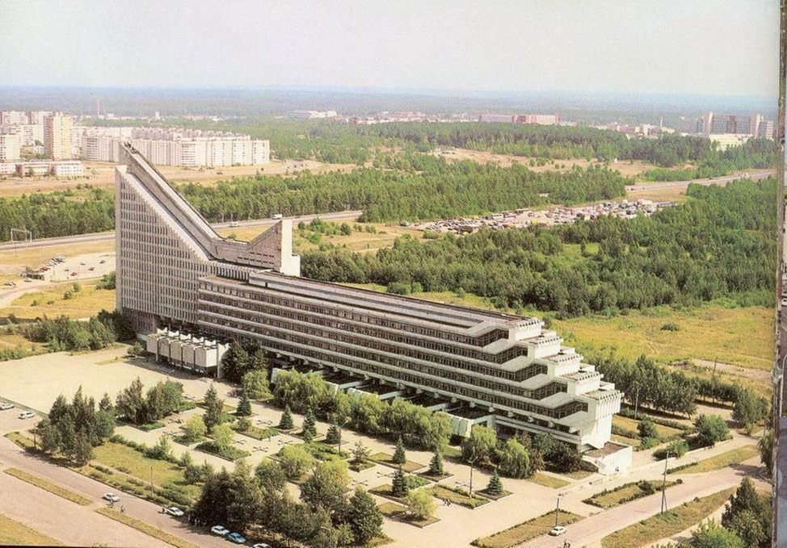

15-ый корпус БНТУ — Учебный корпус БНТУ, расположенный около станции метро "Борисовский тракт". Получил прозвище "Корабль" из-за необычной архитектуры, по форме напоминающей конструкцию огромного океанского лайнера. Освоение этой территории было начато в 70-е годы прошлого века, когда разрабатывался проект Минского архитектурностроительного института (авторы И. Есьман, В. Аникин). Идея создания МАСИ, к сожалению, не была реализована, а проект не осуществлен в полном объеме, хотя отличался целостностью композиции и столичным масштабом. “Применяя типовые индустриальные детали, создать запоминающийся образ здания — вот задача, которую ставил перед собой авторский коллектив, приступая к проектированию Минского архитектурностроительного института”, — так описывали в журнале “Архитектура СССР” за 1975 г. проект МАСИ. В 1983 г. открылся 15й учебный корпус, предназначенный для архитектурного и инженерно строительного факультетов Белорусского политехнического института (ныне БНТУ). Построены также учебнолабораторный корпус, общежития, столовая, спортивно бытовой корпус. Вместе с тем значительная часть территории представляет собой пустырь со сложными геологическими условиями и отсутствием естественного стока вод.
Примечательно, что 15-й корпус БНТУ на самом деле проектировался архитекторами как самолет: поточные аудитории в восьмиэтажном блоке — это крылья лайнера, а нос — самая высокая часть здания, которая смотрит прямо на Национальный аэропорт Минск.
Как всё начиналось? Эскиз Игоря Есьмана Из пояснительной записки: При полной интеграции в бурную жизнь крупного города здесь нет места суете. Вопрос о строительстве нового корпуса возник в 1970 году. Планировалось выделить из политеха 6 факультетов строительного профиля и создать Минский архитектурно-строительный институт (МАСИ), рассчитанный на обучение 6650 студентов. Вся команда, которая создавала проект «пятнашки», была связана с «Политехником». Одним из главных инициаторов проекта стал Владимир Адамович Король – известный архитектор послевоенных лет, председатель Госстроя и заведующий кафедрой «Градостроительства», архитекторы Игорь Есьман руководил дипломными проектами в БНТУ, а Виктор Аникин стал наследником Короля и возглавил после него кафедру «Градостроительства». Автономный студенческий городок планировалось построить в границах проспекта Независимости, улицы Франциска Скорины, кольцевой дороги и лесного массива. Для этого выделили земельный участок площадью 96 га. В студенческом городке собирались возвести учебный корпус, общежития, большую столовую, легкоатлетический манеж и бассейн. Пристройка слева от самой высокой части здания должна была стать актовым залом, а в трёх зданиях позади должны были разместиться помещения для старшекурсников. Учитывая важность объекта и отсутствие инженерных коммуникаций для его проектирования, было привлечено четыре крупных проектных института. Кстати, сам «корабль» планировалось сделать в 2 раза шире и проект не был осуществлен в полном объёме, причиной этого мог стать трагический уход Петра Машерова. Он интересовался задумкой строительства студгородка, а после его смерти в 1980 году внимание к реализации проекта резко снизилось.
Но, несмотря на это, в 1983 году корпус политехнического института №15 открылся. Впервые железобетонные блоки и простые конструкции воплотились в сложную футуристическую архитектуру, в которую никто изначально не вкладывал форму корабля или самолёта. В вестибюле планировалось разместить скульптурные композиции на темы архитектуры и строительства. От них пришлось отказаться, потому что бюджет был урезан. Но, думаем, что все студенты замечали мозаичное панно на входе. Оно выполнено белорусским художником-монументалистом Алесем Квятковским. Не только вестибюль заслуживает внимания, воодушевляющим видом «кораблика», который открывается на въезде в Минск со стороны Москвы, любовался каждый житель и гость столицы, в том числе и 42-ой президент США Билл Клинтон. А эту самую развязку возле 15-го корпуса проектировал доктор архитектуры и профессор Сардаров Армен Сергеевич, который в то время работал в дорожной системе Республики Беларусь. Через 24 года эксплуатации «пятнашки» ей потребовалась реконструкция. Первая была в 2007 году, а потом проводить ремонтные работы в корпусе стало традицией. За небольшое время жизни корпуса в нём возникали проблемы с отоплением, вентиляцией и передвижением студентов на лифтах, многие обросли легендами. Многие слышали, что в кораблике был запущен эскалатор. Правда, практически никто не видел его своими глазами, видимо поэтому про это чудо техники начали слагать разные истории. Ходила легенда, что при установке не учли вибрации эскалатора, и поэтому на месте аудиторий срочно сделали шахты лифтов. А ещё рассказывали, что он издавал звуки надвигающегося танка, поэтому его эксплуатацию быстро завершили. На самом деле Универмаг «Беларусь» и наш корпус стали первыми зданиями в Республике Беларусь, где появились эскалаторы. Изначально для перемещения студентов планировалось 17 лифтов, но потом для экономии при эксплуатации решили их часть заменить эскалаторами, но, видимо, приняли не самое лучшее решение. Сардаров Армен Сергеевич предположил, что окончание их эксплуатации связано с тем, что «эскалаторы требуют довольно серьезного и постоянного обслуживания». Кстати, в интервью для Республиканской строительной газеты Игорь Есьман поделился одной любопытной историей: Эскалаторы проектировали и изготавливали в Ленинграде. И вот в один из дней доставили на машинах в Минск в упаковке из белой плотной ткани. Наутро эти чехлы просто-напросто исчезли. Дело в том, что в начале 1980-х белые джинсы были в моде и считались большим дефицитом. Видимо, предприимчивые граждане растащили эту ткань на обновки.
Самая холодная часть корпуса – это поточные аудитории в восьмиэтажном блоке, которые обдуваются со всех сторон и не стыкуются с землёй, часто их сравнивают с залами холодильниками и морозильниками. Это может быть связано с неправильным расположением корпуса и инновационной системой отопления, об этом далее... Ходили слухи, что там переставали писать ручки, т.к. за время пары замерзали чернила. Мнение Армена Сергеевича по этому поводу: Я к этому корпусу отношусь как к родному. Был ли он идеален? Нет, там были проблемы. Проблемы были не с внешним видом, а как раз с точки зрения микроклимата. Там было довольно холодновато. Про чернила точно не знаю, застывали они или нет. Но после одной из лекций я простыл. Следующая легенда связана с тем, что изначально планировалось расположить корпус перпендикулярно проспекту, но панорама на въезд в город со стороны Москвы открывалась бы не такая захватывающая, как сейчас, поэтому решение изменили. Именно поэтому одна сторона университета сейчас постоянно мёрзнет. Многие преподаватели соглашались с этой версией и уточняли, что по розе ветров его расположение неверно. Примечание: Роза ветров – векторная диаграмма, характеризующая в климатологии режим ветра в данном месте по многолетним наблюдениям.
Масштабы здания внушающие, поэтому радиаторы решили заменить инновационным отоплением: воздух должен был проходить в вентиляцию, согреваться и отапливать помещение. Но аудитории особо не прогревались, и туда залетали птицы, которые застревали и своим пением мешали учебному процессу, а через некоторое время и запахом, т.к. их никто оттуда не доставал. Позже пришлось забетонировать это новшество и установить нормальные батареи. Верить в это или нет, это уже вам решать. Официального этому подтверждения мы не нашли.